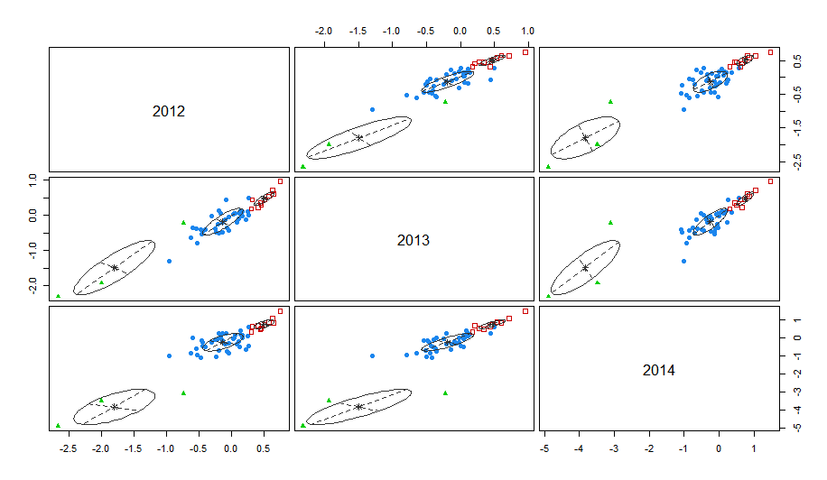

算法介绍部分来自 pluskid 的 Free Mind 博客中的聚类算法系列中的漫谈 Clustering (3): Gaussian Mixture Model ,实例部分为 Bruce Zhao 原创。Free Mind 博客采用的是(CC) BY-NC-SA 3.0协议，可以自由分享和修改，但必须标明作者和原出处！
博主pluskid 是Deep Learning包mxnet的贡献者之一，MIT 出身，他的新博客地址为: http://freemind.pluskid.org/。
算法简介
这次我们来介绍一个很流行的聚类算法：高斯混合模型 Gaussian Mixture Model (GMM)。事实上，GMM 和 k-means 很像，不过 GMM 是学习出一些概率密度函数来(所以 GMM 除了用在 clustering 上之外，还经常被用于 density estimation)，简单地说，k-means 的结果是每个数据点被 assign 到其中某一个 cluster 了，而 GMM 则给出这些数据点被 assign 到每个 cluster 的概率，又称作 soft assignment 。
得出一个概率有很多好处，因为它的信息量比简单的一个结果要多，比如，我可以把这个概率转换为一个 score，表示算法对自己得出的这个结果的把握。也许我可以对同一个任务，用多个方法得到结果，最后选取“把握”最大的那个结果；另一个很常见的方法是在诸如疾病诊断之类的场所，机器对于那些很容易分辨的情况（患病或者不患病的概率很高）可以自动区分，而对于那种很难分辨的情况，比如，49% 的概率患病，51% 的概率正常，如果仅仅简单地使用 50% 的阈值将患者诊断为“正常”的话，风险是非常大的，因此，在机器对自己的结果把握很小的情况下，会“拒绝发表评论”，而把这个任务留给有经验的医生去解决。
作为一个流行的算法，GMM 肯定有它自己的一个相当体面的归纳偏执了。其实它的假设非常简单，顾名思义，Gaussian Mixture Model ，就是假设数据服从 Mixture Gaussian Distribution ，换句话说，数据可以看作是从数个 Gaussian Distribution 中生成出来的。实际上，我们在 K-means 和 K-medoids 两篇文章中用到的那个例子就是由三个 Gaussian 分布从随机选取出来的。实际上，从 中心极限定理 可以看出，Gaussian 分布(也叫做正态 (Normal) 分布) 这个假设其实是比较合理的。除此之外，Gaussian 分布在计算上也有一些很好的性质，所以，虽然我们可以用不同的分布来随意地构造 XX Mixture Model ，但是还是 GMM 最为流行。另外，Mixture Model 本身其实也是可以变得任意复杂的，通过增加 Model 的个数，我们可以任意地逼近任何连续的概率密分布。
模型的求解推导具体请看这里：http://blog.pluskid.org/?p=39
实例分析
问题描述
现有数据库中有100多所初中三年的语数外成绩，教委想知道每个学校在各个学科上的三年的变化情况。例如A学校的语数外成绩，在三年中是否一直保持优势 …
问题解决方案
例如数学，取所有学校2011年的初一数学成绩的平均分，然后标准化；取对应学校2012年的初二数学成绩平均分，然后标准化；取对应学校2013年的初三数学成绩平均分，然后标准化。这样就可以得到三年每个学校数学成绩的相对距离矩阵，然后便可以用于聚类分析；同理可以分别计算语文和外语的相对距离矩阵。若学校A语数外三门都分在了第一类（好），则说明学校A语数外成绩在三年中的一直保持优势；若某学校语文成绩分在了第三类，而数学和外语分在了第一类，则说明该学校语文为劣势学科，数学和外语为优势学科。根据每个学校的在不同学科上面的分类可以得到该学校三年学科变化特征。
R代码及实现
1 #导入数据
2 library(readr)
3 chinese<- read_tsv("语文聚类.txt",col_names = T,col_types = cols(xxdm = "c"))
4 math <- read_tsv("数学聚类.txt",col_names = T,col_types = cols(xxdm = "c"))
5 english<- read_tsv("外语聚类.txt",col_names = T,col_types = cols(xxdm = "c"))
6
7 #聚类分析
8 library(mclust)
9
10 # 语文
11 x <- chinese[,-1]
12 mod1 <- Mclust(x,G = 3)
13 summary(mod1,parameters = T)
14 plot(mod1, what = "classification")
15
16 # 数学
17 y <- math[,-1]
18 mod2 <- Mclust(y,G = 3)
19 summary(mod2,parameters = T)
20 plot(mod2, what = "classification")
21
22 #外语
23 z <- english[,-1]
24 mod3 <- Mclust(z)
25 summary(mod3,parameters = T)
26 plot(mod3, what = "classification")
27
28 # 写出csv
29 resul1 <- data.frame(x,cf=mod1$classification)
30 resul2 <- data.frame(y,cf=mod2$classification)
31 resul3 <- data.frame(z,cf=mod3$classification)
32 write_csv(resul1,"chinese.csv")
33 write_csv(resul2,"math.csv")
34 write_csv(resul3,"english1.csv")结果解读
语文
图中坐标轴为成绩的标准分。从结果来看：初中语文成绩三年变化稳定，但是学校之间存在差距，可以将学校分为三等：红色表示该学校三年语文成绩一直保持较好的成绩，可以记为“好”；蓝色表示该学校三年语文成绩基本处于中等水平，可以记为“中”；绿色表示该学校三年语文成绩基本处于下游，可以记为“差”。
数学

如图，坐标轴为各年数学成绩标准分，部分学校的标准分非常低，将整体拖向左边；总体来看三年各校数学成绩较为稳定，无明显的变化，与语文成绩类型，故也同样分为三类。
红色表示该学校三年数学成绩一直保持较好的成绩，可以记为“好”；蓝色表示该学校三年数学成绩基本处于中等水平，可以记为“中”；绿色表示该学校三年数学成绩基本处于下游，可以记为“差”。
外语
如图所示，坐标轴表示外语学科各年成绩的标准分。从聚类的结果来看外语学科与其他学科略有不同：相比13年，14年外语部分学校有进步的趋势。所以将外语分为四档：
红色表示该学校三年外语成绩处在中上水平，可以记为“中上”；蓝色表示该学校三年外语成绩基本处于中等水平，可以记为“中”；绿色表示该学校三年外语成绩基本处于下游，可以记为“差”。紫色表示该学校三年外语成绩进步明显，且处于较好水平，可以记为“进步（好）”。
综合分析
| 语文 | 数学 | 外语 | 比例 | 描述 | 代表学校 |
|---|---|---|---|---|---|
| 差 | 差 | 差 | 1.96% | 有较大进步空间 | 启德 |
| 差 | 差 | 进步(好) | 3.92% | 英语进步明显 | 吴泾中学 |
| 差 | 好 | 差 | 1.96% | 数学优势明显，语文英语有待提高 | 区少体校 |
| 差 | 好 | 中上 | 1.96% | 数学优势明显，英语存在优势，语文有待提高。 | 浦江一中 |
| 好 | 好 | 进步(好) | 1.96% | 三好学校且英语进步明显 | 协和尚音 |
| 好 | 好 | 中 | 5.88% | 语文、数学优势明显，英语有一定提升空间 | 上师初中 |
| 好 | 好 | 中上 | 7.84% | 三好学校 | 七宝实中 |
| 好 | 中 | 中上 | 1.96% | 语文优势明显，英语存在优势，数学有一定提升空间 | 七宝二中 |
| 中 | 中 | 差 | 3.92% | 语文、数学有一定进步空间，外语有待提高 | 龙茗中学 |
| 中 | 中 | 进步(好) | 21.57% | 英语进步明显，语文、数学有一定提升空间 | 罗阳中学 |
| 中 | 中 | 15.69% | 三科有一定进步空间。 | 航华中学 | |
| 中 | 中 | 中上 | 31.37% | 英语存在优势，语文数学有一定提升空间。 | 梅陇中学 |
Bruce Zhao
/
Published under(CC) BY-NC-SA 3.0 CN.